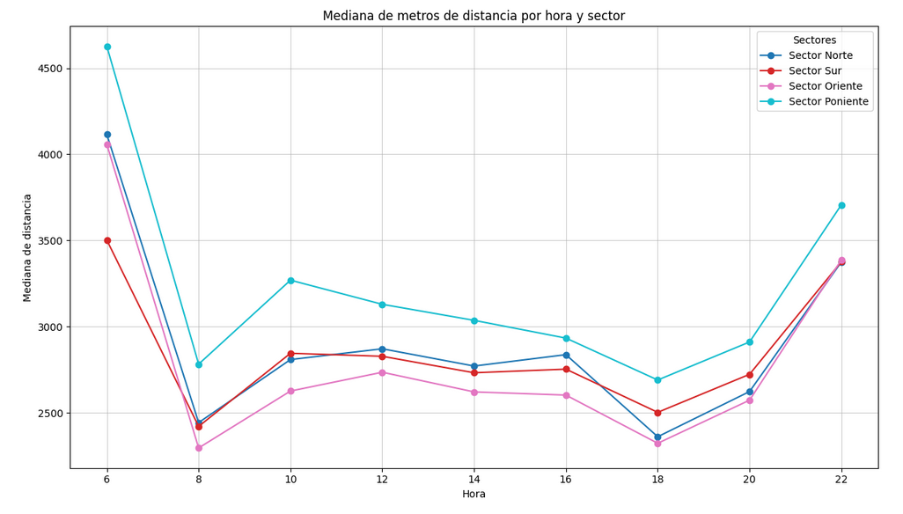
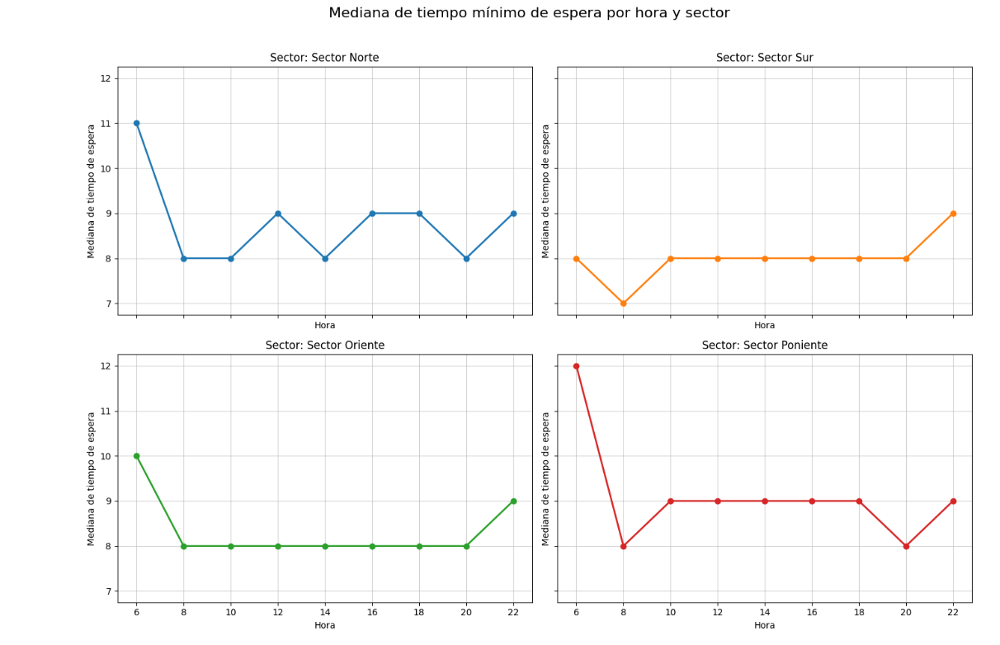
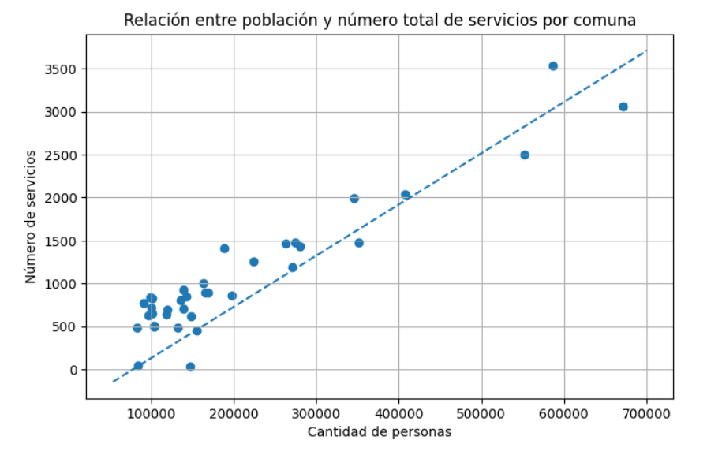
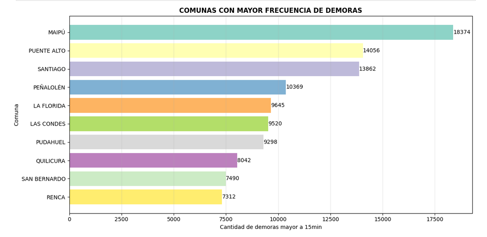
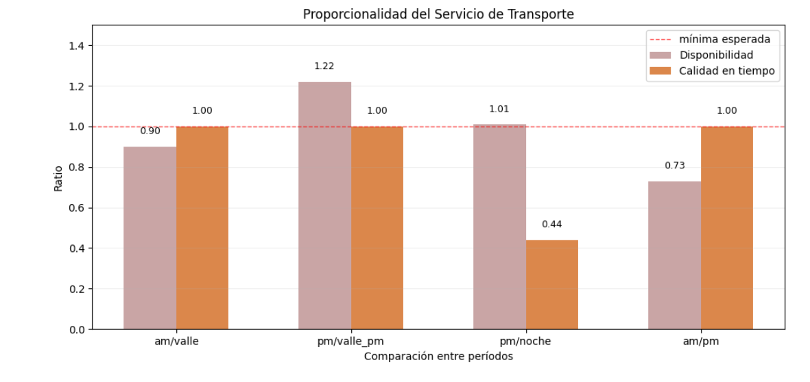
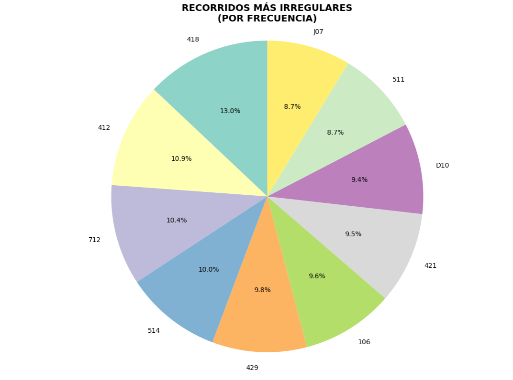
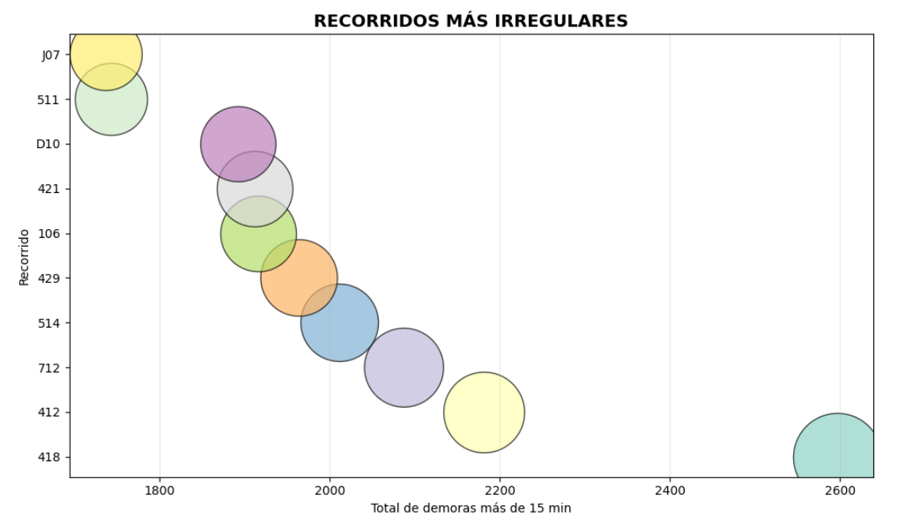
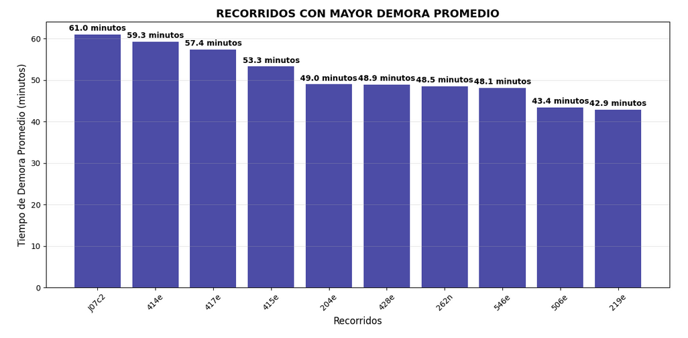

Por Daniela Espinoza, Carolina Lobos y Vicente Pardo.
La urbanización es un fenómeno que ocurre a nivel mundial y se espera que continúe acrecentándose en los próximos años; según estimaciones de la ONU, a día de hoy más de un 55% de la población mundial vive en zonas urbanas. En la Región Metropolitana de Chile, donde residen 7.400.741 personas según el Censo 2024, el servicio de transporte público es de gran significancia para el desarrollo de las actividades del día a día, pero presenta muchas fallas que repercuten en la vida de muchísimas personas. El problema a tratar corresponde al de la movilidad usando como medio el transporte público, específicamente, el retraso con el que pasan los buses y la inhabilitación de estaciones de metro. Una encuesta de 2023 indica que un 37% de los encuestados concuerda en que su principal problema es la poca frecuencia con que pasa el transporte. La motivación del proyecto se basa en la detección de patrones de ineficiencia del sistema de transporte público, específicamente, del transantiago y el metro.
La recolección de los datos de la Red Metropolitana de Movilidad (RED) se lleva a cabo de forma automatizada a través de la API api-red mediante scripts programados en un servidor (Cron). Para el Transantiago (micros), los datos se extraen cada 2 horas a las 6:00, 8:00, 10:00, 12:00, 14:00, 16:00, 18:00, 20:00, y 22:00 hrs. Los datos del estado del Metro de Santiago se recolectan cada 1 hora, desde las 6:30am hasta las 22:30am. Los datos recolectados en bruto se almacenan en los directorios buses_outputs y metro_outputs.
Se definió una segmentación horaria basada en las rutas expresas del metro: Hora Punta AM (6am y 8am), Hora Valle AM (10am y 12pm), Hora Valle PM (14pm y 16pm), Hora Punta PM (18pm y 20pm) y Hora Noche (22pm).
Posteriormente, se aplicó un proceso de ETL (Extracción, Transformación y Carga) utilizando el notebook unificacion_datos.ipynb. Este proceso se encargó de la limpieza y la fusión de los archivos CSV, generando datos unificados y listos para el análisis, incluyendo información detallada de los paraderos como comuna, coordenadas y número de servicios. Los resultados de este proceso de ETL se encuentran en los directorios csv_unificado_*.








¿Qué podemos mejorar?
¿Qué podría salir mal?
A partir del análisis realizado (y más profundizado en el notebook “analisis_data.ipynb”), podemos concluir que por lo general el sistema de transporte público tiene un buen funcionamiento, pero que tiene que enfocarse en mejorar aristas como por ejemplo la oferta de micros en los horarios críticos y disminuir los tiempos de demora. Para lograrlo, es importante tomar más atención a los siguientes datos y plantearse las siguientes preguntas:
¿Qué pasa con el metro? Al no tener muchos días de datos, y en ellos tener casos mínimos donde el servicio falló, no fue un factor crucial para el análisis, sobretodo considerando que, para cuando este falla, se pueden buscar rutas alternativas, ya sea combinando en otras líneas de metro o tomando micro. Cabe recalcar que no se le busca restar importancia, pero se le podía sacar más valor a los datos de las micros, y además que las preguntas del proyecto tenían un enfoque superior en el Transantiago.
En síntesis, el análisis realizado demuestra que, independiente de las percepciones de cada persona, la mayoría de los recorridos operan dentro de parámetros aceptables en cuanto a puntualidad y frecuencia. Ello, no minimiza la necesidad de abordar las rutas críticas donde hay demoras imprudentes, sino convierte dichos casos como focos específicos mejorables dentro del sistema. Si bien el sistema de transporte público requiere atención prioritaria en áreas determinadas, sobretodo en la optimización de frecuencias durante horarios punta y la reducción de tiempos de espera en comunas específicas, los datos analizados demuestran que, por lo general el sistema cumple con su función esencial: conectar al usuario con su destino de manera eficiente. Al tomar foco en mejorar la calidad de aristas determinadas por características demográficas y de demanda dentro de cada sector y comuna, el sistema de transporte público en Santiago podrá consolidarse más allá de que funcione, sino que su servicio tenga un impacto positivo dentro de la población.